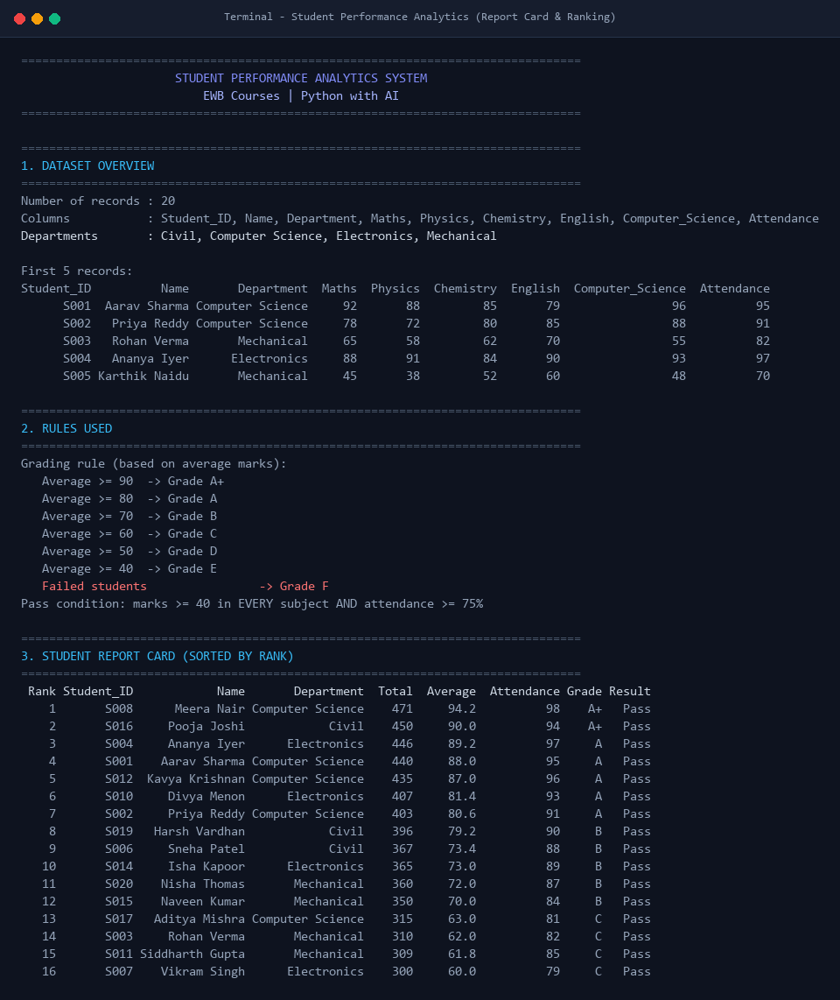
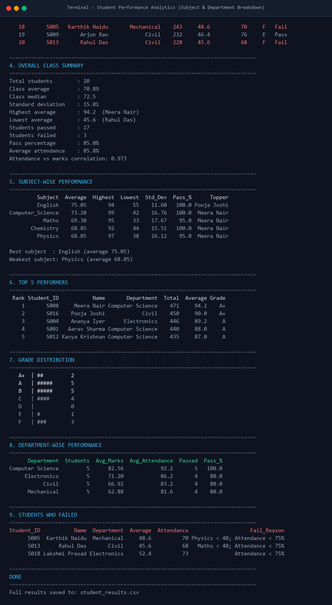

1. Project Overview & Metadata
| Field |
Detail |
| Project Title | Student Performance Analytics System |
| Student Name | Swathi Talak |
| Email Address | swathitalak28@gmail.com |
| Course | Python with AI (EWB Courses) |
| Programming Language | Python 3.13 |
| Primary Libraries | NumPy, Pandas |
| GitHub Repository | https://github.com/swathitalakk-hub/python-ai |
| Operating System | Windows 11 / Cross-Platform |
2. Abstract & Problem Statement
2.1 The Problem
In modern academic institutions, faculty members frequently manage large volumes of raw examination and attendance data across multiple courses and departments. Evaluating performance manually using conventional spreadsheets or hand calculations is time-consuming, prone to human calculation errors, and fails to provide instantaneous diagnostic insights such as:
- Which subject exhibits the lowest average score and requires syllabus review?
- How strongly does attendance correlate with student examination performance?
- What are the precise root causes behind individual student failures?
- How do different academic departments compare in student pass percentage?
2.2 The Solution
The Student Performance Analytics System is a modular Python application powered by NumPy and Pandas. It automates data ingestion, vectorized calculations, transparent academic grading, ranking, and multi-dimensional statistical summaries.
3. Dataset Specification
File: students.csv with 20 student records across 4 academic departments (Computer Science, Electronics, Mechanical, Civil), 5 students each.
| Column |
Data Type |
Constraints / Description |
Student_ID | String | Unique identifier format (S001 - S020) |
Name | String | Full student name |
Department | Categorical | Academic department |
Maths - Computer_Science | Integer | Marks obtained out of 100 (0 to 100) |
Attendance | Integer | Attendance percentage (0% to 100%) |
4. Evaluation Criteria & Grading Logic
- Total & Average: Computed row-wise using NumPy 2D array matrix operations (
np.sum(axis=1), np.mean(axis=1)).
- Pass Condition: Score ≥ 40 in every single subject AND ≥ 75% attendance.
- Grading Scale: ≥90 (A+), ≥80 (A), ≥70 (B), ≥60 (C), ≥50 (D), ≥40 (E). Any student who fails the pass condition receives F.
5. Key Findings & Analytics Results
- Total Students Evaluated: 20
- Overall Class Average: 70.89 / 100 (Median: 72.50, Std Dev: 15.01)
- Overall Pass Percentage: 85.0% (17 Passed, 3 Failed)
- Attendance vs. Marks Correlation: 0.973 (Extremely strong positive correlation)
Top 5 Academic Achievers
| Rank | ID | Name | Department | Total | Average | Grade |
|---|
| 1 | S008 | Meera Nair | Computer Science | 471 | 94.20% | A+ |
| 2 | S016 | Pooja Joshi | Civil | 450 | 90.00% | A+ |
| 3 | S004 | Ananya Iyer | Electronics | 446 | 89.20% | A |
| 4 | S001 | Aarav Sharma | Computer Science | 440 | 88.00% | A |
| 5 | S012 | Kavya Krishnan | Computer Science | 435 | 87.00% | A |
Subject-Wise Benchmark Comparison
| Subject | Average | Highest | Lowest | Std Dev | Pass % | Topper |
|---|
| English | 75.05 | 94 | 55 | 11.60 | 100.0% | Pooja Joshi (94) |
| Computer Science | 73.20 | 99 | 42 | 16.76 | 100.0% | Meera Nair (99) |
| Maths | 69.30 | 95 | 33 | 17.67 | 95.0% | Meera Nair (95) |
| Chemistry | 68.85 | 92 | 44 | 15.51 | 100.0% | Meera Nair (92) |
| Physics | 68.05 | 97 | 38 | 16.12 | 95.0% | Meera Nair (97) |
Department-Wise Performance Breakdown
| Department | Students | Avg Marks | Avg Attendance | Passed | Pass % |
|---|
| Computer Science | 5 | 82.56 | 92.2% | 5 | 100.0% |
| Electronics | 5 | 71.20 | 86.2% | 4 | 80.0% |
| Civil | 5 | 66.92 | 83.2% | 4 | 80.0% |
| Mechanical | 5 | 62.88 | 81.6% | 4 | 80.0% |
Failure Root-Cause Diagnosis
| ID | Name | Department | Average | Attendance | Diagnosis Reason |
|---|
| S005 | Karthik Naidu | Mechanical | 48.6 | 70% | Physics < 40 (38); Attendance < 75% |
| S013 | Rahul Das | Civil | 45.6 | 68% | Maths < 40 (33); Attendance < 75% |
| S018 | Lakshmi Prasad | Electronics | 52.4 | 73% | Attendance < 75% (Shortfall of 2%) |
6. Program Execution Screenshots

Output Part 1: Dataset Overview, Pass/Grading Rules, and Student Report Card

Output Part 2: Statistical Analytics, Subject & Department Benchmarks
7. How to Run
# 1. Clone the repository
git clone https://github.com/swathitalakk-hub/python-ai.git
cd python-ai
# 2. Install requirements
pip install -r requirements.txt
# 3. Execute the system
python main.py